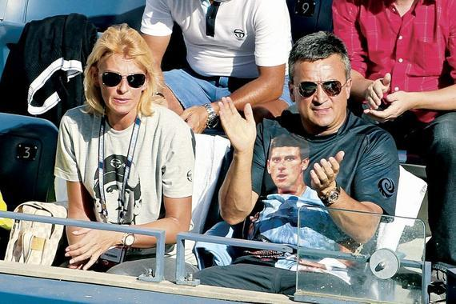
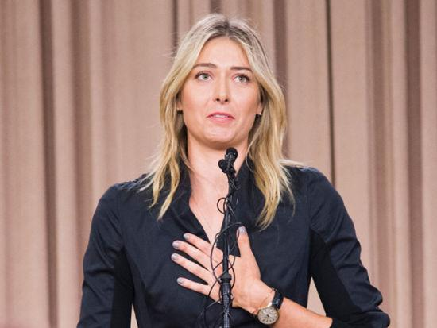
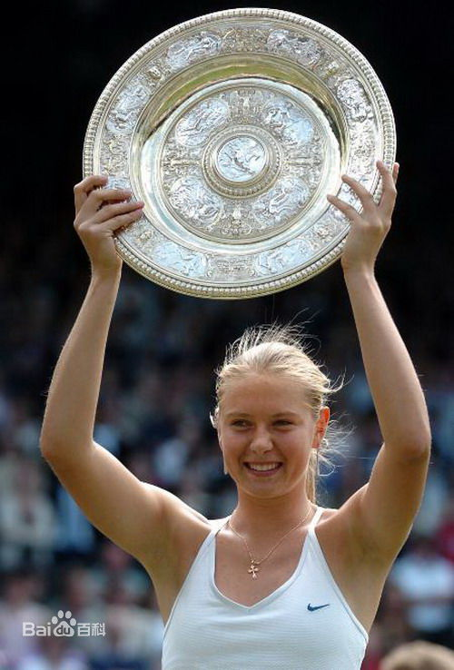
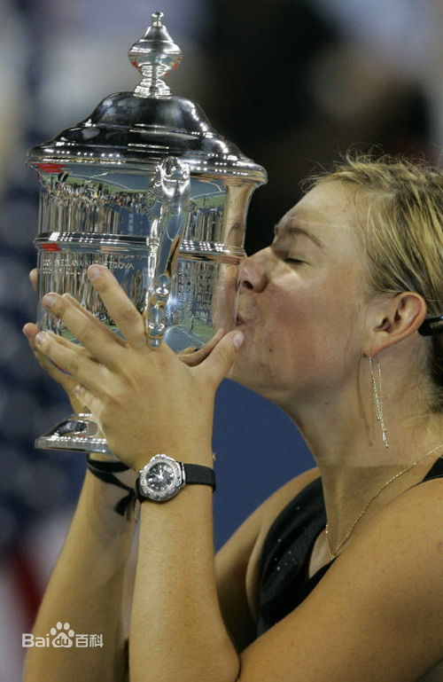
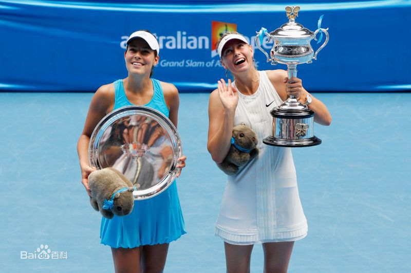
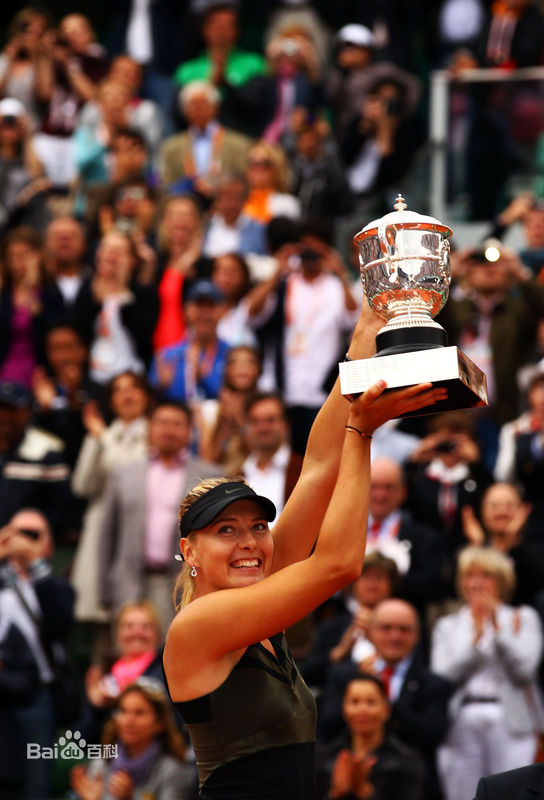

球王的坑爹老爸
小德父亲质疑费德勒人品，炮轰为何34岁还在打球
新浪记者
2016 3 16
直到2011年，德约科维奇终于打破了费纳的垄断，开始成长为男子网坛新的王者。而赛德扬至今仍然对费德勒在2006年戴维斯杯对儿子发表的言论——瑞士人质疑德约科维奇炸伤——耿耿于怀。“诺瓦克当时只有19岁，他鼻窦有问题，没法呼吸。而费德勒却极不尊重他。那个时候的他确实是世界上最好的球员，但不是个足够好的人。没有人这么对待诺瓦克。我不理解为什么费德勒还在打球——他已经34岁了。”这里有一个链接到 http://ife.baidu.com
即便如今诺瓦克是世界第一，但有时候，他在赛场上依然无法像瑞士球王那样得到一边倒的支持。赛德扬表示：“我一直跟诺瓦克说，你是来自一个小国家，一个受过炮火侵袭的国家，经历过战争，你的人生注定不会平坦。诺瓦克从未伤害过任何人，但嘘声会让他更强大。”在新窗口打开链接 http://ife.baidu.com>
莎娃误服禁药遭禁赛
或成体育史最大输家 损失或超9亿元
英国媒体
2016 3 16
北京时间3月8日消息，由于误服违禁药物，莎拉波娃未能通过年初澳网药检，目前正在等待ITF的进一步处罚决定。而据英国《每日邮报》报道，误服禁药一事使得莎娃的损失可能达到1亿英镑（约合人民币9.23亿）。链接到 http://ife.baidu.com
- 列表项一
- 列表项二
- 列表项三
莎拉波娃照片
莎娃 2004 温网夺冠
莎娃 2006 美网夺冠
莎娃 2008 澳网夺冠
莎娃 2012 法网夺冠
奶牛也爱看 NBA
费德勒现场助阵湖人 一身休闲打扮喜笑颜开
新浪新闻
2016 3 5
当今男子网坛大满贯排名：
- 费德勒 17 座
- 纳达尔 & 桑普拉斯 14 座
- 德约科维奇 11 座
| 项目 | 成绩 | 历史排名 |
|---|---|---|
| 结论 | 无可争议的史上第一人 | |
| 大满贯 | 17 | 1 |
| 排名世界第一周数 | 302 | 1 |
| 冠军数 | 上杉升 | 1 |